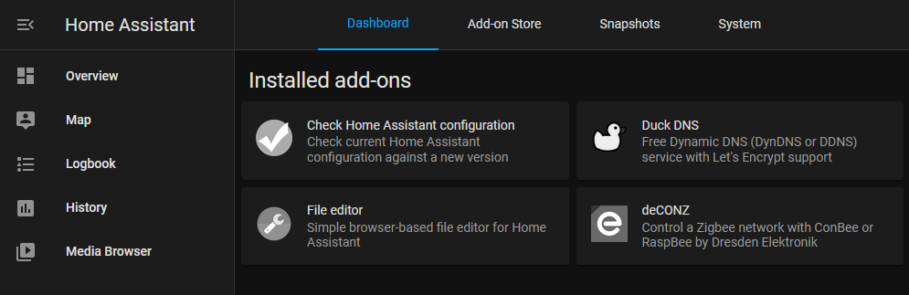

How to install Homeassistant in a Docker container.
Published: 2021-09-08
Last updated: 2021-09-08 23:16
This is the guide that I have followed for installing Home Assistant on Docker: https://github.com/home-assistant/supervised-installer
It is split in X steps:
$ curl -Lo installer.sh https://raw.githubusercontent.com/home-assistant/supervised-installer/master/installer.sh
$ bash installer.sh --machine raspberrypi4 # Not rpi64(!)
You should now see a truckload of containers running when you run the command docker ps (except for the addons):
$ docker ps -a
CONTAINER ID IMAGE COMMAND CREATED STATUS PORTS NAMES
e4e74391821e homeassistant/armv7-addon-nginx_proxy:3.0.2 "/init /run.sh" 26 hours ago Up 26 hours 0.0.0.0:80->80/tcp, :::80->80/tcp, 0.0.0.0:443->443/tcp, :::443->443/tcp addon_core_nginx_proxy
e368bb8a7c82 homeassistant/armv7-addon-configurator:5.3.3 "/init" 26 hours ago Up 26 hours addon_core_configurator
667f0bd06813 ghcr.io/hassio-addons/node-red/armv7:10.0.0 "/init" 26 hours ago Up 26 hours addon_a0d7b954_nodered
5de96fd9b603 homeassistant/armhf-addon-deconz:6.10.0 "/init" 26 hours ago Up 26 hours addon_core_deconz
7cec24a697d0 homeassistant/armv7-addon-duckdns:1.13.0 "/init /run.sh" 26 hours ago Up 26 hours addon_core_duckdns
639745b0716b homeassistant/armv7-addon-mosquitto:6.0.1 "/init" 26 hours ago Up 26 hours 0.0.0.0:1883-1884->1883-1884/tcp, :::1883-1884->1883-1884/tcp, 0.0.0.0:8883-8884->8883-8884/tcp, :::8883-8884->8883-8884/tcp addon_core_mosquitto
7cb55f454264 homeassistant/armv7-hassio-multicast:2021.04.0 "/init" 26 hours ago Up 26 hours hassio_multicast
2b0d613fa555 ghcr.io/home-assistant/armv7-hassio-cli:2021.08.1 "/init /bin/bash -c …" 26 hours ago Up 26 hours hassio_cli
4bdfdbf18f22 ghcr.io/home-assistant/armv7-hassio-audio:2021.07.0 "/init" 26 hours ago Up 26 hours hassio_audio
1037d933ec74 ghcr.io/home-assistant/armv7-hassio-dns:2021.06.0 "/init" 26 hours ago Up 26 hours hassio_dns
7bf259658e41 homeassistant/armv7-hassio-supervisor "/init" 4 days ago Up 26 hours hassio_supervisor
8ea5f06d0c1f ghcr.io/home-assistant/raspberrypi4-homeassistant:2021.8.8 "/init" 7 days ago Up 26 hours homeassistant
1dddcf5c35d0 homeassistant/armv7-addon-check_config:3.8.0 "/init" 7 days ago Exited (0) 7 days ago addon_core_check_config
76315327b5ee ghcr.io/home-assistant/armv7-hassio-observer:2021.06.0 "/init" 2 months ago Up 26 hours 0.0.0.0:4357->80/tcp, :::4357->80/tcp hassio_observer
This might seem daunting at first. But, basically, each program runs in its own container: like Home Assistant; a supervisor that keeps track of updates and the home assistant state; other helper containers; and addons. Each container has its own version, state and log. All of which can be accessed either through Home Assistant (version and logs), or by using the docker commands.
Before migrating the files, make sure to stop Home Assistant. This can be done with the command
ha core stopordocker stop homeassistant. When done, start it again by replacing stop with start.
The configuration files for the Dockerized Home Assistant are located under /usr/share/hassio/homeassistant. Make sure to move your existing files there, if you have any (e.g. configuration.yaml, and possibly even login tokens).
The next step would be to actually start using the supervised HA features, by for example, installing some addons: 